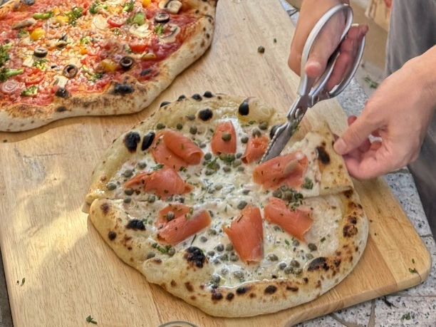

Team
Meet the Alcalde Lab

Principal investigator
Reinaldo E. Alcalde
Incoming Tracy Assistant Professor in Environmental Engineering
Penn State
- Postdoc, Microbiology · Caltech
- PhD, Environmental Engineering · UT Austin
- MS, Environmental Engineering · UIUC
- BS, Civil Engineering · University of Nebraska–Lincoln

Future lab member
You?
We’re looking for curious, motivated people who want to explore microbial life and learn across disciplines. Join us and help shape a new lab from the beginning.
Explore opportunities